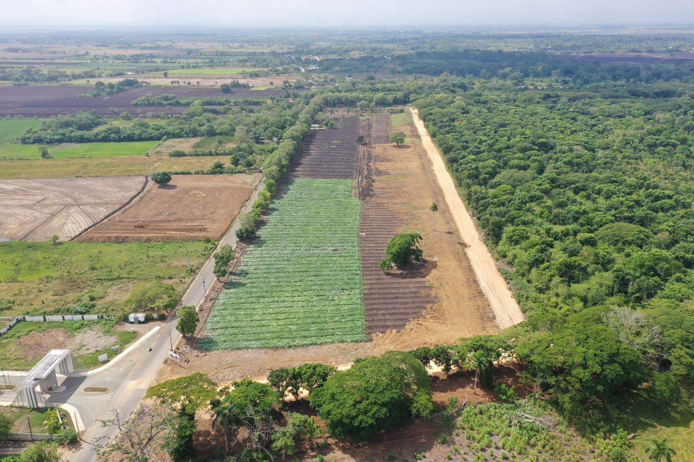
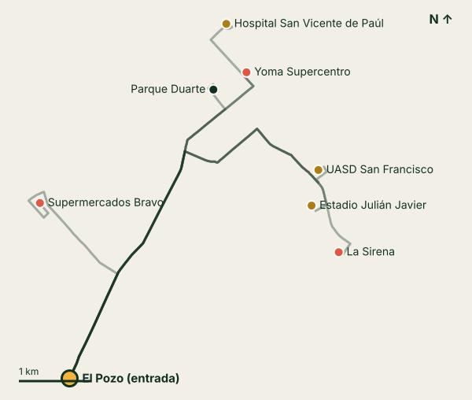
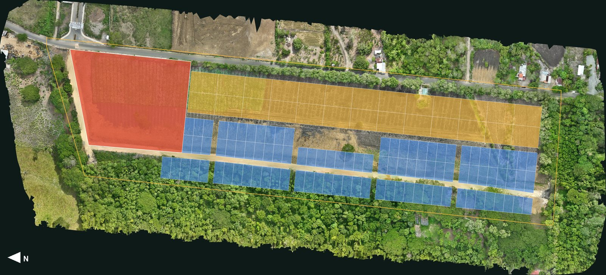
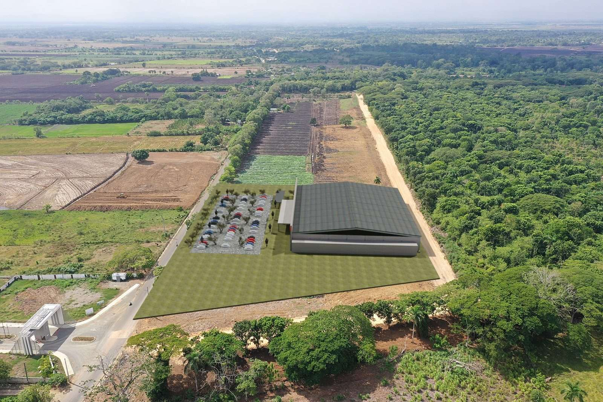
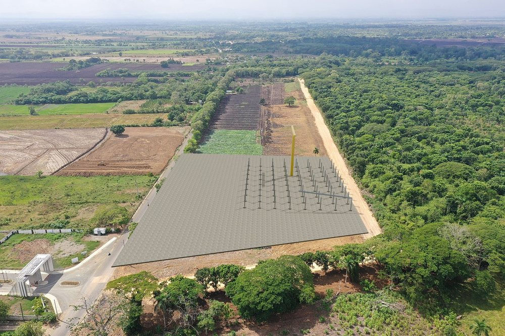
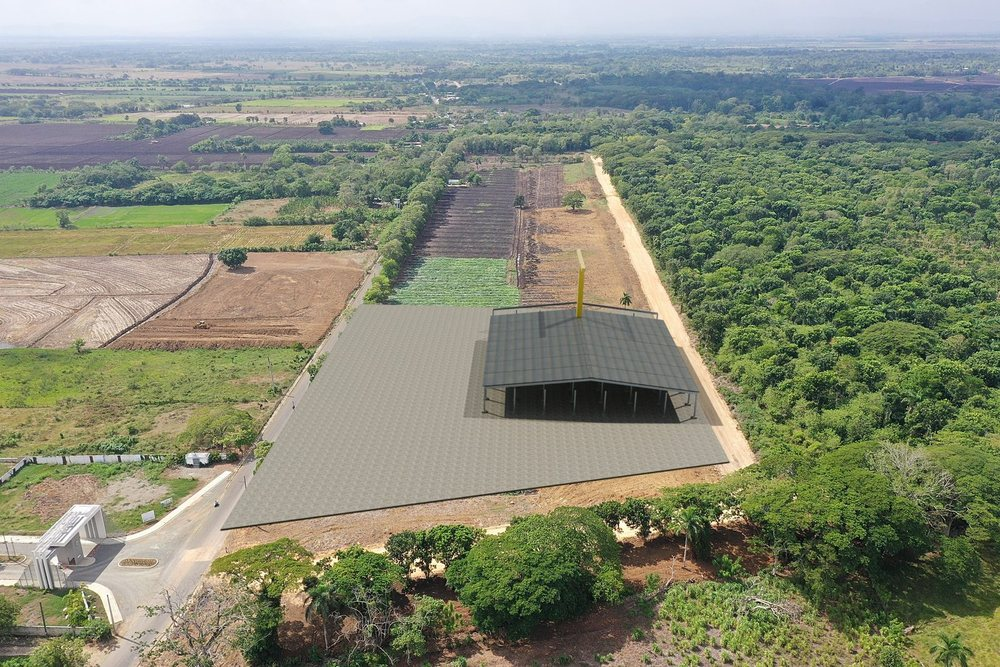
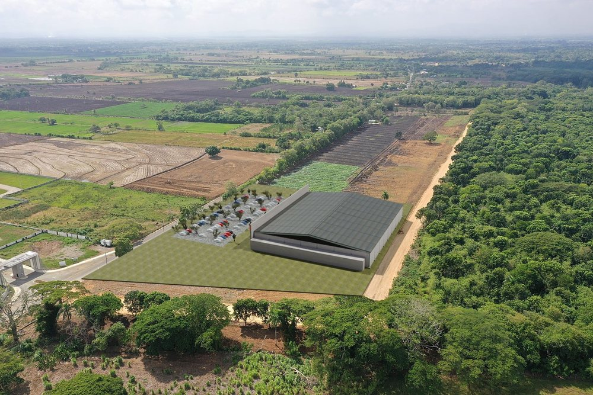

Desarrollo habitacional y comercial en la carretera Las Cejas–La Enea, San Francisco de Macorís, a menos de 300 m de la Circunvalación.
El Pozo es una lotificación de solares residenciales y comerciales al sur de San Francisco de Macorís, con frente a la carretera Las Cejas–La Enea. Este informe junta lo que hoy está medido y documentado, y separa lo que todavía es propuesta.
Un terreno junto a la carretera y una distribución dibujada en CAD (DXF en coordenadas UTM, septiembre de 2026), que sustituye al plan maestro de junio.
En la entrada, un solar comercial de 21,727 m² con 179.5 m de frente a la carretera. A lo largo del lado este, 26 solares mixtos de 1,220 m², para comercio o vivienda. Detrás, 99 solares residenciales de 342 a 455 m².
La Circunvalación de San Francisco de Macorís, de 9.8 km por el sur de la ciudad, iba por el 80 % de avance en enero de 2026. El terreno queda a 252 m de ella.
En carro, desde la entrada del proyecto, Supermercados Bravo de Terranova queda a 4 km y el Parque Duarte a 10 minutos.
Los precios y los permisos. Este informe no trae precios ni proyecciones de rentabilidad.

Distancias y tiempos en carro medidos desde la entrada del proyecto sobre las vías abiertas de OpenStreetMap (cálculo OSRM, 22 de septiembre de 2026). Son tiempos sin tráfico.

| Destino | Distancia | Tiempo |
|---|---|---|
| Supermercados Bravo | 4.0 km | 10 min |
| Parque Duarte | 4.9 km | 10 min |
| Yoma Supercentro | 5.2 km | 11 min |
| UASD San Francisco | 6.3 km | 12 min |
| Estadio Julián Javier | 6.4 km | 12 min |
| Hospital San Vicente de Paúl | 6.3 km | 13 min |
| La Sirena | 7.1 km | 13 min |
La Circunvalación de San Francisco de Macorís recorre 9.8 km por el sur de la ciudad. En enero de 2026, según la prensa, la obra iba por el 80 % de avance. Medido sobre el trazado de OpenStreetMap, el terreno queda a 252 m y el solar comercial a 288 m, así que cuando abra, el proyecto tendrá cerca una vía que bordea la ciudad por el sur.
En 2022 el Ayuntamiento aprobó 15,000 m² para Supermercados Bravo en Terranova, que hoy queda a 4 km del proyecto. Como referencia de tamaño de una tienda reciente: el Merca Jumbo que abrió en Las Terrenas en 2026 tiene 3,800 m² de construcción y 200 parqueos. El solar comercial de El Pozo tiene 21,727 m².
Áreas medidas sobre la distribución en DXF (UTM 19N) de septiembre de 2026. Sobre la ortofoto del vuelo el plano cae en su sitio: la calle entre manzanas coincide con el camino de tierra que ya existe.

| Uso | Solares | Área (m²) | % |
|---|---|---|---|
| Residencial, 342–455 m² | 99 | 39,009 | 26.9 |
| Mixto, 1,220 m² | 26 | 31,720 | 21.8 |
| Comercial | 1 | 21,727 | 15.0 |
| Calles, áreas verdes, márgenes y franja sin asignar | — | 52,776 | 36.3 |
| Terreno | 126 | 145,232 | 100 |
| Vendible | 92,456 m² |
| Proporción vendible | 64 % |
| Plan de junio (referencia) | 129,644.58 m² |
Un trapecio de 144.2, 179.5, 135.5 y 137.9 m. El lado este, de 179.5 m, da a la carretera Las Cejas–La Enea. Es llano: según la nube de puntos del vuelo, el suelo desbrozado va de 37.5 a 39.5 m de cota en todo el solar. Va de la calle de tierra del oeste hasta la carretera, sin cruzar la calle.

Para medir el espacio se modeló una plaza de una planta tipo nave de supermercado: 5,600 m² bajo techo, locales en línea, marquesina al frente y unos 100 parqueos del lado de la carretera. La cuña norte del solar queda libre.



El Pozo está en anteproyecto. Hay terreno, fotos y vídeos de dron y una distribución en CAD de septiembre de 2026. No es un plano aprobado.
| Pendiente | Qué falta y para qué |
|---|---|
| Lindero legal | El área del terreno de este informe es la envolvente del dibujo (145,232 m²). Con el plano de mensura se confirma y se recalcula el porcentaje vendible. |
| Franja al oeste de la calle | La capa comercial del DXF llegaba al otro lado de la calle de tierra. La plaza termina en la calle; esos 3,775 m² quedan sin asignar hasta decidir su uso. |
| Numeración de los solares | El DXF no trae textos. La numeración (M01–M26, R001–R099) es de trabajo, de norte a sur. |
| Precios | No están definidos. Este informe no da precios por metro ni proyecciones de retorno; se presentarán aparte cuando existan. |
| Permisos | No se documenta aquí ningún permiso. No hay que dar por otorgado ninguno hasta tener el documento en mano. |